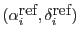

XMM-Newton Science Analysis System
epicbscalgen (ccftools-1.35.1) [xmmsas_20170112_1337-16.0.0]
The scheme has two main inputs:
- A calibrated event list (at least with the sky pixel columns
X/Y as produced by the corresponding SAS tasks
emproc/epproc
for MOS and PN respectively. The image
generated from this event list must contain at least two distinct
sources which the SAS eboxdetect
can detect.
- The true (cataloged) positions
,
 for a number of sources in the image generated from the event list.
for a number of sources in the image generated from the event list.
XMM-Newton SOC/SSC -- 2017-01-12